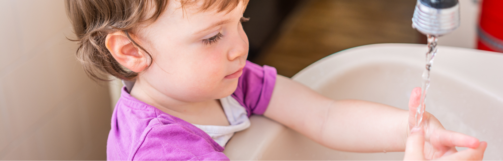

Habt ihr Lust auf ein faszinierendes Experiment, das eure Vorschulkinder zum Staunen bringt? Der „magische Pfeffertrick" ist nicht nur einfach durchzuführen – er zeigt auf spielerische Weise, wie Tenside (wie in Seife) funktionieren und warum Händewaschen so wichtig ist. Und er macht richtig viel Spaß! 😊
und in der Kita vorhanden
PDF-Anleitung zum Download
für Vorschulgruppen
Was lernen die Kinder dabei?
Warum Seife Keime und Schmutz vom Händewaschen entfernt
Wie sich verschiedene Stoffe auf der Wasseroberfläche verhalten
Naturwissenschaftliche Neugier wecken und Staunen erleben
Feinmotorik und Konzentration gezielt fördern
Materialien — ihr braucht nur 5 Dinge
Flacher Teller oder Schale
Wasser
Pfeffer (alternativ: Glitzer oder Paprika)
Spülmittel oder Seife
Wattestäbchen oder Finger
+ kostenlose Anleitung als PDF
Schritt-für-Schritt-Anleitung: So geht's
Wasser einlassen 💦
Füllt die Schale mit Wasser. Erzählt den Kindern, dass Wasser die Grundlage allen Lebens ist – und dass wir es heute ein bisschen verzaubern! 🪄
Pfeffer streuen 🌶️
Streut eine große Portion Pfeffer (oder Glitzer) auf die Wasseroberfläche. Beobachtet gemeinsam, wie die Teilchen oben schwimmen.
„Bäh, das ist dreckig!" 😝
Fragt die Kinder, ob sie denken, dass der Pfeffer sich leicht entfernen lässt. Sie dürfen versuchen, ihn mit dem trockenen Finger wegzuwischen — nichts passiert!
Der Zaubertrick beginnt 🪄
Taucht ein Wattestäbchen oder den Finger in Spülmittel oder Seife ein. Fragt die Kinder, was sie glauben, was gleich passieren wird.
„Abrakadabra – und weg!" ✨
Berührt mit dem Seifenfinger vorsichtig die Wasseroberfläche. Und ZACK! – Der Pfeffer flieht in alle Richtungen! 🎉
Warum passiert das? 🤔
Erklärt den Kindern: Seife verändert die Oberflächenspannung des Wassers. Der Pfeffer schwimmt oben auf, aber sobald Seife ins Spiel kommt, breitet sie sich aus und schiebt den Pfeffer zur Seite — genau wie beim Händewaschen Schmutz und Keime gelöst werden!
Noch mal ausprobieren! 🔁
Kinder lieben es, Dinge mehrfach zu erleben. Probiert es noch einmal mit einer anderen „schmutzigen" Zutat — Glitzer oder Paprikapulver.
„Und was lernen wir daraus?" 🧐
Fragt die Kinder, warum Seife so wichtig ist. Lasst sie erklären, was sie beobachtet haben — in eigenen Worten!
Das Experiment erweitern 🔬
Lasst die Kinder experimentieren: Was passiert, wenn sie zuerst Seife ins Wasser geben und dann Pfeffer? Oder wenn sie statt Wasser Milch nehmen? (Spoiler: Es wird noch spannender! 🥛)
Gemeinsames Fazit ❤️
Verbindet das Experiment mit dem Alltag. Fragt: Wann wascht ihr eure Hände? Warum ist das so wichtig? Vielleicht fällt ihnen ein eigenes „Seifen-Zaubertrick"-Spiel ein!

Variationen des Experiments im Vergleich
Das Grundexperiment lässt sich leicht abwandeln — jede Variante bringt neue Wow-Momente und Lerneffekte:
| Variante | Zutaten | Was passiert | Lerneffekt |
|---|---|---|---|
| Classic 🌶️ | Pfeffer + Wasser + Seife | Pfeffer flieht sofort zum Rand | Tenside & Händewaschen |
| Glitzer ✨ | Glitzer + Wasser + Seife | Glitzer „explodiert" farbig nach außen | Virusverbreitung sichtbar machen |
| Paprika 🫑 | Paprikapulver + Wasser + Seife | Farbiger Effekt, intensiver als Pfeffer | Farbbeobachtung, Staunen |
| Milch 🥛 | Milch + Pfeffer + Lebensmittelfarbe + Seife | Farbexplosion durch Fettmoleküle in Milch | Fette & Tenside, Oberflächenspannung |
Kostenlose Anleitung als PDF herunterladen
Die vollständige Schritt-für-Schritt-Anleitung mit allen 10 Schritten gibt es als übersichtliches PDF — ideal zum Ausdrucken und in der Kita aufzuhängen:
Schritt-für-Schritt-Anleitung — Der magische Pfeffertrick
10 Schritte, übersichtlich gestaltet · PDF · 86 KB · EDULEO Akademie